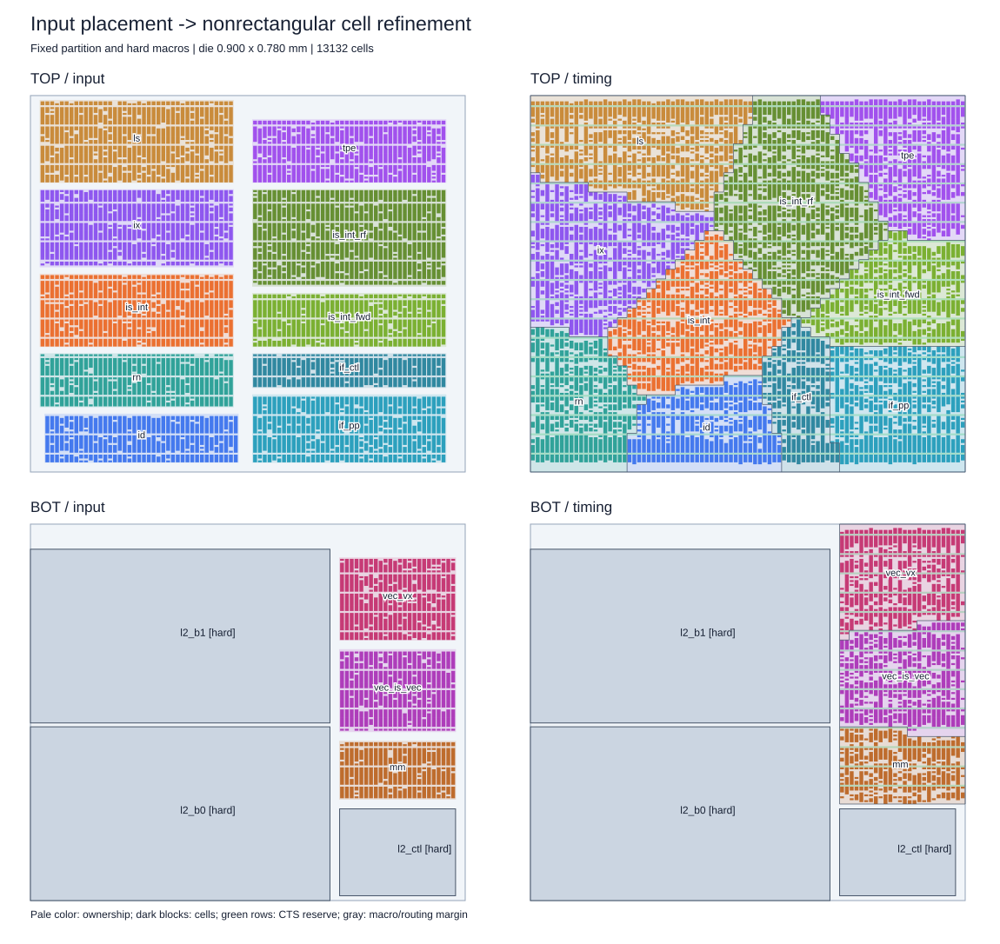
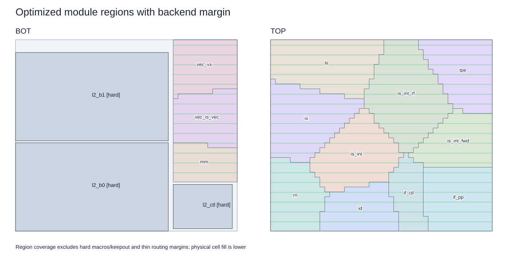
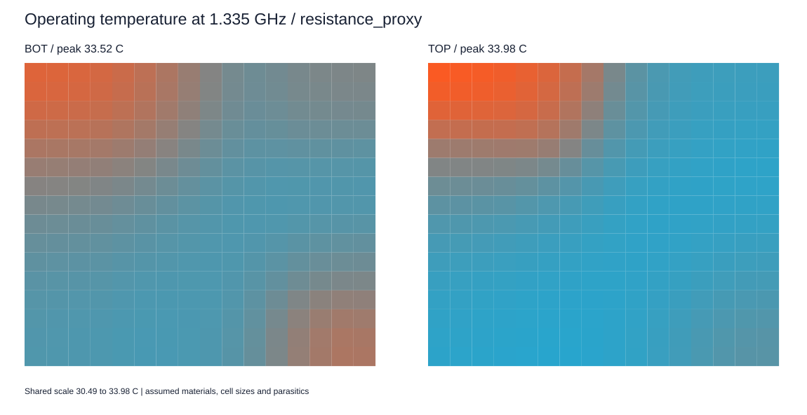
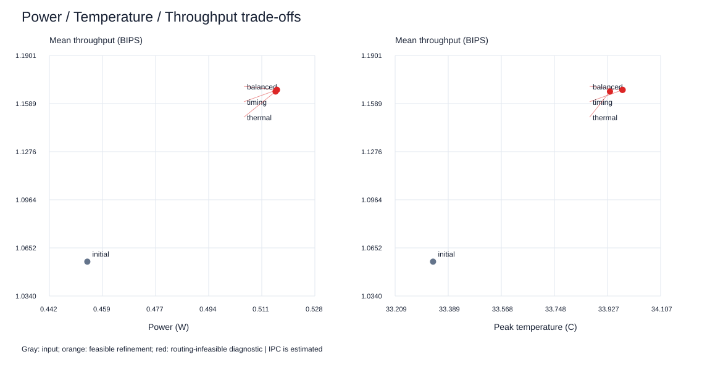

最优解配置提供几何、分层和硬模块；退火配置提供功耗、互连及物理参数。参考温度不用于反推功耗。当前 cell 尺寸、内部网络和 RC 仍为估算。
所选候选：timing（诊断候选，存在拥塞违例）；温度后端：resistance_proxy。IPC 为解析估计。
实际 cell 利用率：BOT 47.6%、TOP 49.6%；预留约 10% 行用于 CTS，cell 两侧各留 1.0 μm padding。领地填满不等于实体 cell 填满。
下面主表和温度图使用满足估算路径延时后降频的运行状态。为了单独比较布局，名义频率 3.003 GHz 下各方案的功耗与峰值温度另列如下；均为模型结果。
| 方案 | 名义功耗 W | 名义峰值 °C |
|---|---|---|
| initial | 1.1545 | 43.33 |
| balanced | 1.1600 | 42.88 |
| timing | 1.1601 | 42.88 |
| thermal | 1.1604 | 42.80 |
估算降频状态及性能：
| run | frequency_GHz | power_W | peak_C | mean_bips | nominal_WNS_ps | nominal_TNS_ns | route_overflow_tracks | feasible |
|---|---|---|---|---|---|---|---|---|
| initial | 1.18214 | 0.45446 | 33.3373 | 1.05627 | -530.71938 | -1746.7801 | 10920.25 | False |
| balanced | 1.33537 | 0.51582 | 33.97709 | 1.1678 | -428.92633 | -1727.86162 | 9332.25 | False |
| timing | 1.33537 | 0.51586 | 33.97841 | 1.1678 | -428.36306 | -1738.61673 | 9206.75 | False |
| thermal | 1.33384 | 0.51542 | 33.93539 | 1.16672 | -429.62569 | -1731.24308 | 9816.5 | False |



